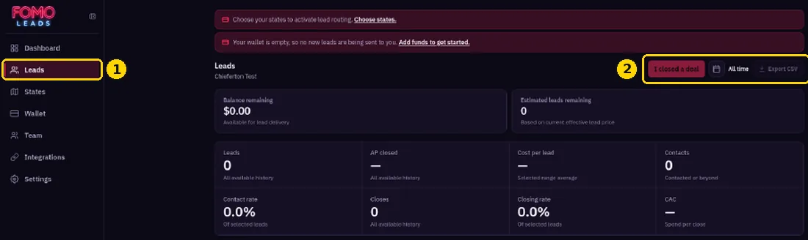
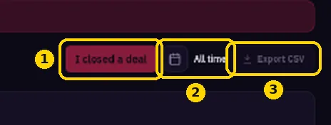

Where Can I See My Leads?
Find every lead and its stats in one place.
All your leads are at https://members.fomoleads.io/leads.

- Use the All time filter to change the date range.

- The stat cards show your balance, est. leads, leads, AP closed, cost per lead, contacts, contact rate, closes, closing rate and CAC.
- Move each lead through its outcome stages: contacted, booked, no-show, presented, closed or archived.
- Click Export CSV to download your leads (see Exporting leads to CSV).